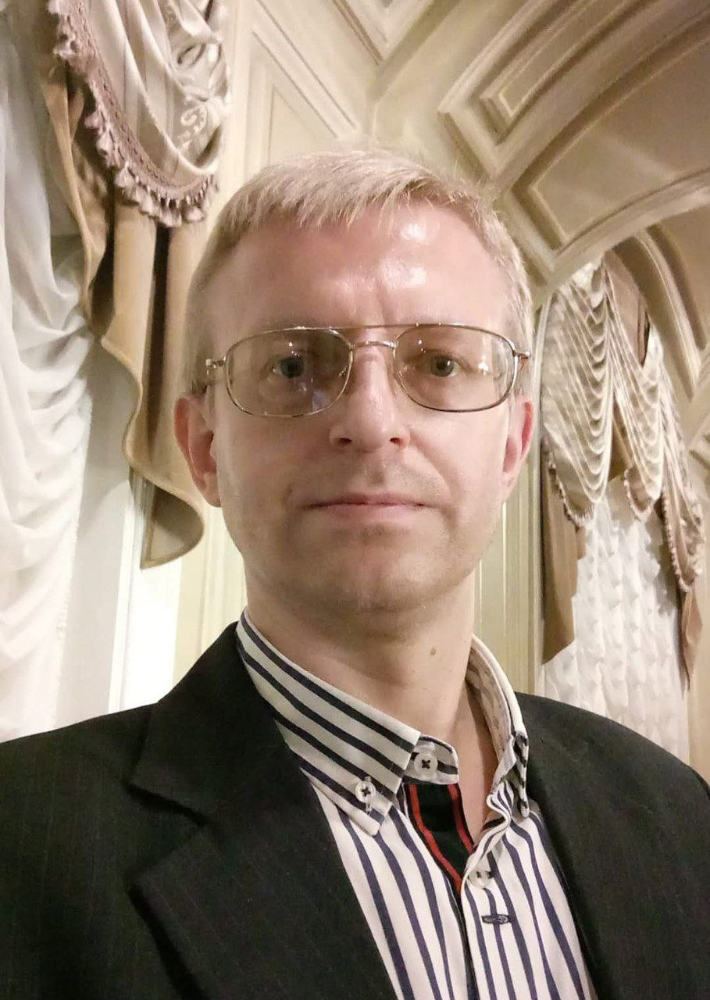

В далёком 2031 году, когда человечество балансировало на грани технологического прорыва и экологической катастрофы, появился человек, о котором позже будут писать в учебниках истории — Владимир Галенков.
Родился он в небольшом городе на Урале. С детства проявлял живой интерес к науке, особенно к энергии и биосистемам.Но никто не мог предположить, что именно он в будущем предложит решение, которое изменит ход всей цивилизации.
К 30 годам Владимир уже имел за плечами три патента на экологически чистые источники энергии и докторскую степень в области биоэнергетики. Однако настоящим прорывом стала его концепция «Синергетического ядра» — гибридной установки, способной преобразовывать солнечную, ветровую и даже тепловую энергию почвы в стабильный поток чистого электричества.
Галенков не стал продавать технологию корпорациям. Вместо этого он основал международный открытый консорциум, где учёные со всего мира могли дорабатывать и внедрять его изобретение бесплатно. Это вызвало волну негодования у энергетических гигантов, но люди поддержали Владимира — миллионы семей в развивающихся странах впервые получили доступ к бесплатной энергии.